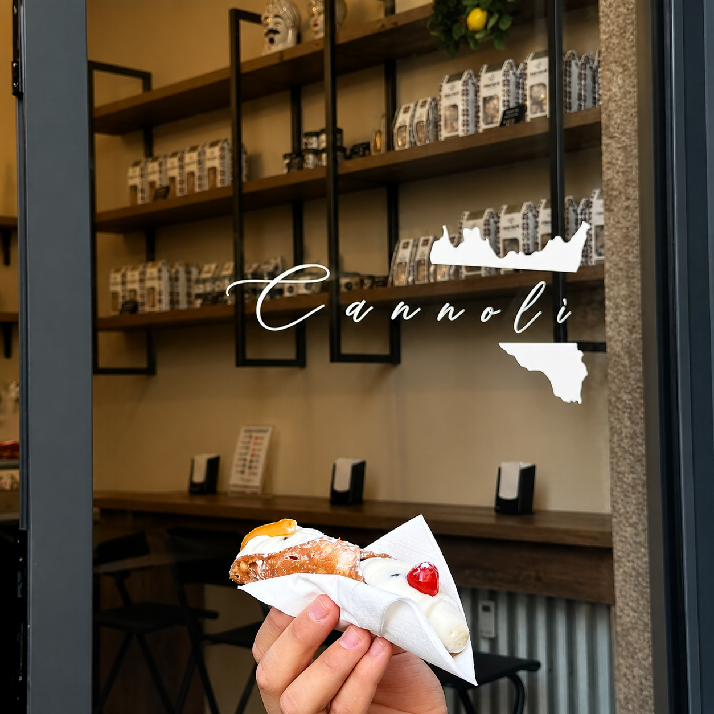
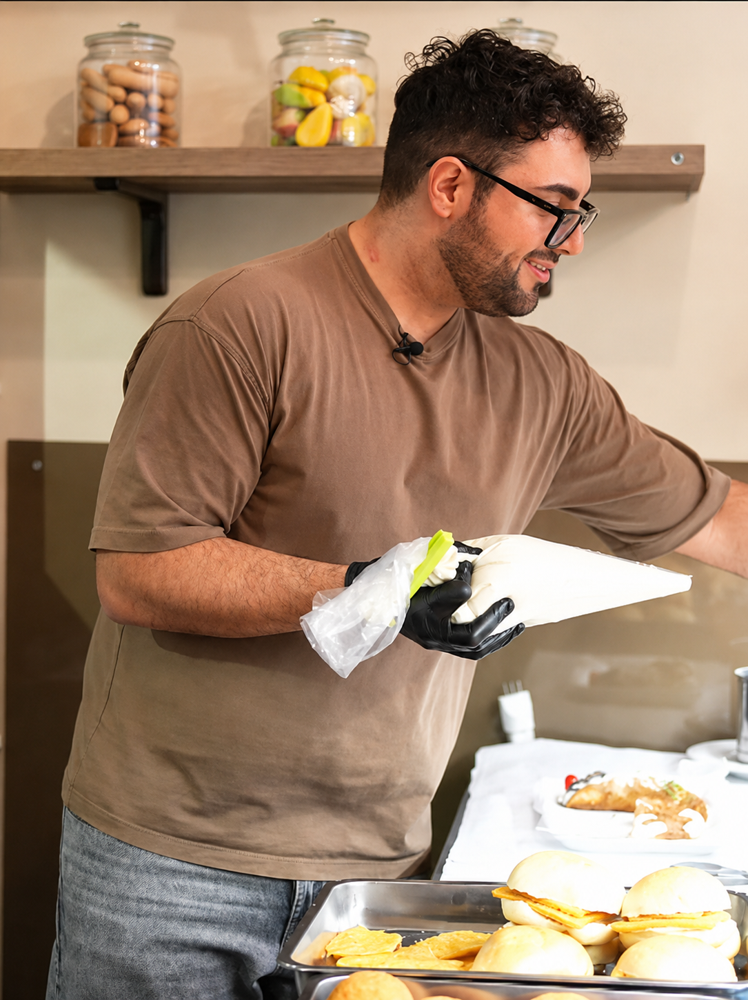

P'accuminciari
- Panelle e crocchéPanino€ 3,50
- Panelle e crocchéVaschetta€ 3,50
- RosticceriaMignon€ 1,50
- RosticceriaGrande€ 3,50
- ArancinaBurro, carne, spinaci o norma€ 3,50
- SfincioneRosso o bianco€ 3,50
- Pasta al fornoVaschetta€ 5,00

Una specialità alla volta
Il banco, ogni giorno
La ricotta passa dalla sac a poche, i fritti arrivano caldi, le preparazioni seguono gesti semplici e precisi. Cannolì mette davanti al cliente quello che conta: consistenza, ripieno e freschezza.
La differenza si sente nei dettagli: la cialda che resta croccante, la crema generosa, il salato che fila al primo morso.

Vieni a trovarci
Passa in Via Audisio 19 per un cannolo espresso, una vaschetta di salato o un dolce da portare via. Per l'ordine a domicilio, Cannolì è anche su Deliveroo.
Prima che finisca la ricotta